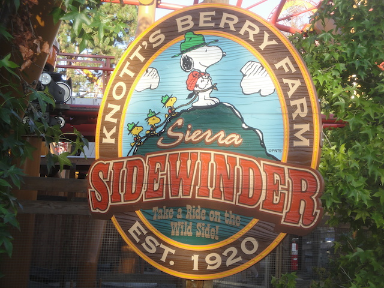
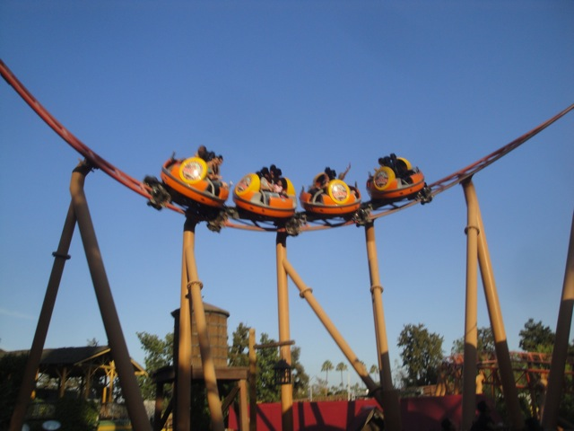

| |
Sierra Sidewinder Review
Once you get in the seat, you pull down the lap bar, buckle the seat, and wait. Once you dispatch, you'll turn and climb up the lifthill. If you happen to be sitting backwards, you'll feel funny as you climb up the lifthill. But once you crest the lifthill, it won't matter which way you decided to face as you'll be changing direction like theres no tommorow. You'll go down the first drop spinning. As you go around all the turns, you'll have no idea whats going on. While there arn't very many moments of airtime, you'll have a hell lot of fun. And each ride is a diffrent experience, so you may have a dull and boring ride without much spinning, or you could have a wicked crazy ride. And if arn't satisfied, just tell yourself. Hey, at least I'm not on Pole Position.
7/10
Location: Knotts Berry Farm
Opened: 2007
Built by: Mack
Last Ridden: May 9, 2019
Sierra Sidewinder Photos






Home
|